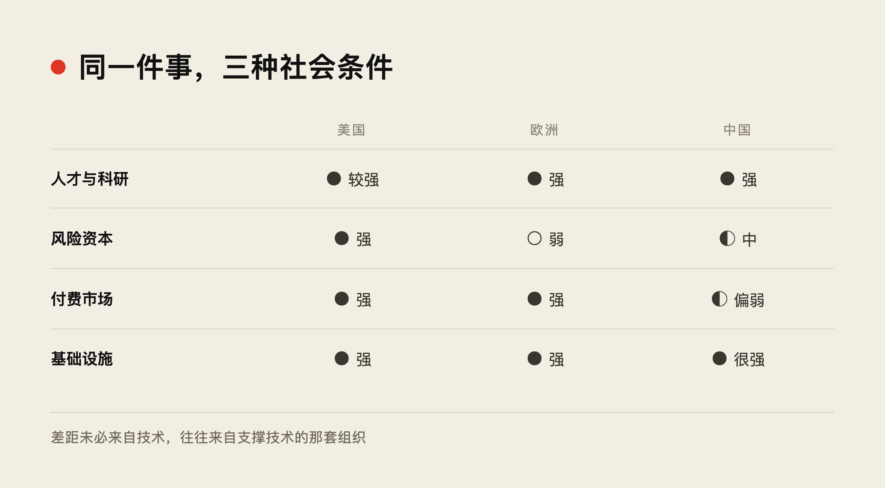
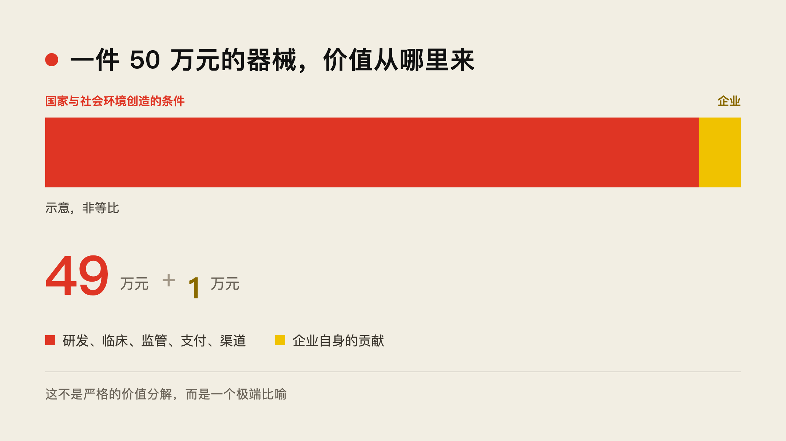
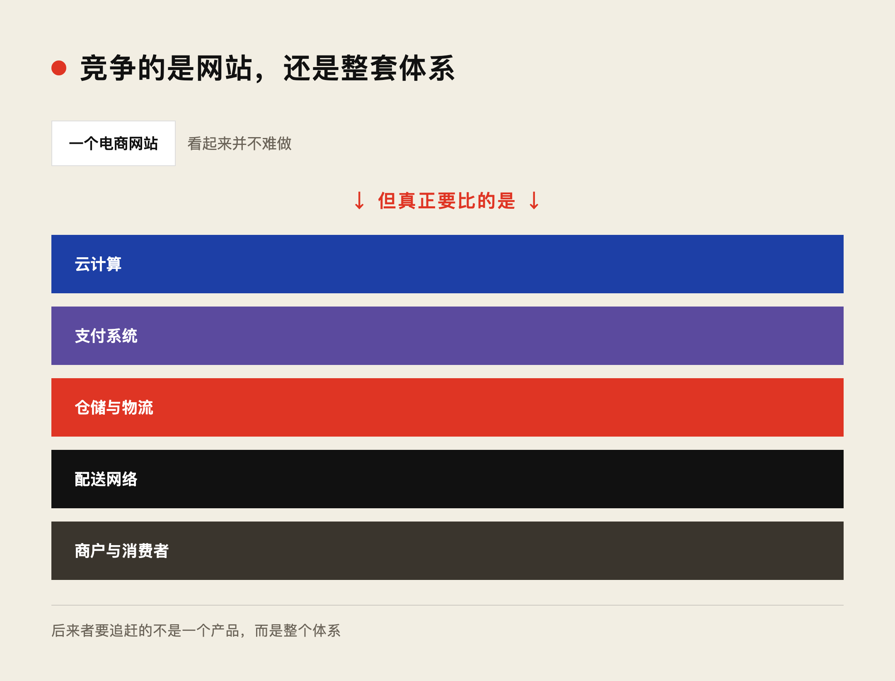

最近，我有一个越来越强烈的感受。
这个感受来自对一些企业的观察，比如美国的爱德华生命科学（Edwards Lifesciences），也来自对一些发展中国家经济状况的思考。
我们通常认为，一家企业的竞争力来自技术、产品、效率、人才以及研发投入。对于一个国家，我们也常常强调教育、勤劳和科技进步。
但我越来越觉得，这些因素固然重要，却未必能让一家企业或一个国家走得很远。
世界上有许多经济落后的国家，但这些国家的人民并不懒惰，也并非没有教育和人才。然而，同样的勤劳和知识，却没有带来相同的经济成就。
企业也是如此。许多成功的企业，实际上只能在特定的社会制度和经济环境中生存。如果把它们搬到另一个国家，即使技术、团队和产品完全不变，也未必能够取得同样的成功。
这让我开始怀疑，我们所理解的企业竞争力，究竟有多少来自企业自身，又有多少来自它所处的社会？
▲ ■ ●
一、创新不只是人才的问题
今天的 AI 和科技竞争，尤其能说明这个问题。
我们习惯认为，科技竞争的核心是人才。但仔细想想，一项创新通常只是从一个人的想法开始的。
一个人有了想法，需要有人愿意投资，承担它可能失败的风险。等到产品做出来，即使还很不成熟，也需要有人愿意买单。如果产品确实有意义，还需要市场能够迅速打开，让它获得收入、继续改进并扩大规模。
因此，从一个想法到一家企业，再到一个产业，人才和技术只是其中的部分条件。
风险投资、社会的付费意愿，以及市场能够扩张的速度，同样重要。
以 GPT 为例。这样的创新当然需要优秀的科学家和工程师，但它能够发展到今天的规模，很大程度上也依赖于持续获得巨额融资的能力。
而融资能力又从哪里来？
它很大程度上取决于整个社会的经济发展水平，以及资本组织和承担风险的能力。
如果粗略地比较美国、欧洲和中国，就会发现一些有趣的差异。
美国有人才，有科技，有强大的风险投资体系，也有愿意为新技术付费的市场。
欧洲并不缺乏优秀人才和科研能力，但相较美国，风险资本的规模和支持高风险科技企业迅速扩张的能力往往不足。
中国有大量科技人才，也能够组织相当规模的投资，但在某些创新领域，尤其是软件和 AI，市场的付费意愿及商业化收入仍然是明显的制约。
至少从目前大模型公司的收入表现来看，中美之间的差距，并不能简单地用技术水平来解释。

然而，反过来想，中国已经取得的科技和产业成就，又是世界上绝大多数国家难以企及的。
这显然也不能只归因于资本。
中国拥有巨大的发电能力、云计算基础设施、现代物流体系、大量理工科毕业生，以及规模庞大的工业生产网络。
这些条件，看起来并不是某一家企业的竞争力，却在很大程度上决定了企业能够做什么，以及能够做到多大规模。
一家中国公司与一家欧洲公司，在技术能力上未必有很大差别。但一旦竞争涉及大规模计算、能源、供应链和物流，它们背后的社会条件就可能形成决定性的差距。
表面上，是企业与企业的竞争；在更深的层次上，却是两个社会的组织能力在竞争。
▲ ■ ●
二、产品的价值，有多少来自企业？
医疗行业让我对这个问题有了更直观的感受。
最近观察美国的爱德华生命科学，这是一家以人工心脏瓣膜等医疗器械闻名的企业。
我曾用一组粗略的数字来比较中美市场：假设一种瓣膜相关治疗，美国一年有 10 万例，中国只有 1 万例；美国的终端价格可以达到 50 万元人民币，而中国可能只有 10 万元。
这些数字需要进一步核实，但它们所说明的问题很值得思考。
同样的医疗技术，在不同国家可以形成完全不同的市场规模和商业回报。其原因未必主要是技术差距，而是医疗支付能力和支付制度的差异。
更有意思的是制造过程。
一些人工心脏瓣膜仍然需要大量手工缝制，生产可以放在墨西哥这样的国家。假设一名工人花一天时间完成一个瓣膜的缝制，直接人工成本可能只有 1000 元左右。
但最终的器械以及相关治疗，却可能在终端市场形成几十万元的价格。
当然，这其中还有材料、研发、临床试验、监管审批、质量体系、医生培训和销售渠道等大量成本，不能简单地将制造人工成本与最终价格比较。
但这恰恰是问题所在。
一个医疗产品的商业价值，并不只是由它的制造过程决定，还依赖于整个医疗体系：从研发、监管、医院、医生，到保险和支付制度。
中国企业未必没有能力开发和制造同类产品。但如果没有相应的医疗支付市场，即使做出相近的技术，也无法获得同样的收入，难以吸引同样规模的资本，最终可能根本无法孕育出同等规模的企业。
那么，一个售价 50 万元的医疗产品，究竟有多少价值来自企业，又有多少来自它所依赖的国家和社会？
我甚至愿意用一个极端的比喻：
50 万元中，可能有 49 万元是国家和社会环境创造的条件，企业自身的贡献只有 1 万元。

这当然不是严格的价值分解，而是想强调一个容易被忽视的事实：
我们看到的是企业获得了收入，却很容易忘记，是整个社会的组织体系使这种收入成为可能。
如果离开它所在的社会环境，这家企业还能拥有多少竞争力？
▲ ■ ●
三、真正的差距，是生产的复杂性
由此，我逐渐形成了一个更一般的看法。
无论国家还是企业，能够赚多少钱，可能并不主要取决于它们比别人勤劳多少、效率高多少，甚至不完全取决于技术先进多少。
更重要的是，它们能够参与和组织多么复杂的生产活动。
这里所说的复杂性，并不只是产品的技术复杂程度，而是整个生产过程所依赖的社会分工、知识、资本、基础设施，以及不同组织之间的协作关系。
以微软为例。
微软能够长期专注于软件，本身就意味着它处在一个高度分工的产业结构中。
它不需要生产计算机的每一个零部件，也不需要自己建设电网和通信网络。社会中有无数企业和个人，能够利用它的软件开展工作，并愿意为此付费。
这种商业模式，只有在一个高度复杂的社会分工体系中才能成立。
假设一个社会仍然主要依靠以物易物，软件还能有多大的交易价值？
即使有人能够开发出优秀的软件，也未必有人能够购买，更未必能够依靠它建立一家大型企业。
不是软件失去了功能，而是社会还没有形成让这种知识劳动独立获得报酬的交易体系。
软件、智能以及其他知识劳动的经济价值，很大程度上依赖于社会是否建立了为知识和专业化劳动付费的制度。
知识可以由个人创造，但它能够获得多大的经济回报，却取决于社会能够如何使用它。
从这个角度再看中国的工业发展，也很有意思。
今天中国拥有如此庞大的制造业和众多民营企业，如果没有 20 世纪 50 年代开始的工业基础建设，是否还能形成今天的局面？
过去几十年，民营企业在许多行业逐渐取代了国有企业，成为生产和创新的主体。
但是企业的所有制变了，工业体系却没有消失。
工业基础设施、工程技术人才、设备制造能力、产业配套，以及长期积累的生产经验，都被保留下来，并不断发展。
今天的民营企业，实际上是在一个已经存在的工业体系之上创业。
它们不需要重新发明整个工业社会。
而许多发展中国家没有这样完整的工业体系。即使一个企业家拥有优秀的技术，也可能无法获得稳定的能源、设备、材料、零部件和专业人才。
如果这些条件都需要他自己建立，那么创业的难度就完全不同了。
因此，我们今天看到的企业成就，不只是企业家个人努力的结果，也是整个社会长期积累的生产能力的结果。
企业是在利用一个社会已经组织起来的复杂性。
有些企业能够自己建立复杂的生产体系，有些企业则利用其他企业提供的基础设施与专业服务。
但无论哪一种，都离不开社会分工。
▲ ■ ●
四、复杂性才是更深的竞争壁垒
这又引出了一个问题：企业真正的竞争壁垒是什么？
我们通常认为，是技术先进、产品性能好、生产效率高，或者成本低。
但这些优势往往可以被追赶。
一个产品性能好，别人可以研究；一种生产方法效率高，别人可以模仿；一项技术领先，其他企业也可以投入研发。
然而，复制一套复杂的生产与组织体系，要困难得多。
复杂性不仅意味着更多的技术，还意味着大量相互依赖的专业分工、基础设施和协作关系。
更重要的是，复杂性本身就意味着高昂的成本。
即使竞争者知道如何复制一种商业模式，也未必愿意承担重建整个体系的代价。
效率与性能的优势可能被取代，但复杂性所形成的进入成本，却可能让竞争者望而却步。
电商就是一个很好的例子。
今天，全球电商产业在很大程度上由中国和美国的企业主导。
建立一个电商网站并不困难，开发交易系统也不是什么无法突破的技术难题。
但真正成熟的电商体系，需要云计算、支付系统、仓储、物流、配送，以及大量商户和消费者的协作。
这些并不是单个商户能够解决的问题。
像亚马逊和阿里巴巴这样的大企业，可以自己建设庞大的平台与基础设施。小企业则可以利用 AWS、阿里云和现有电商平台，获得原本只有大型企业才能拥有的能力。
这就是社会分工的力量。
一家小企业可以不必自己建设复杂的基础设施，只需要购买服务，就能够参与一个高度复杂的生产与交易体系。
但对于这个体系之外的企业而言，竞争就困难得多。
它面对的不只是某一家电商平台，而是整套云计算、支付、物流、供应链和商业网络。
即使能够开发类似的软件，也未必能够复制相同的商业模式。
因此，电商的竞争壁垒，可能根本不在于网站做得有多好，而在于支撑网站的整个体系有多复杂。

当然，复杂本身并不一定创造价值。没有实际需求的复杂性，只会成为成本。
真正有价值的是，一个复杂体系能够完成简单组织无法完成的生产，并且使这种复杂性在大规模交易中得到回报。
而一旦这样的体系建立起来，后来者就不只是要追赶一个产品，而是要追赶整个体系。
这才是复杂性真正形成竞争壁垒的原因。
▲ ■ ●
五、经济学中的组织
回到最初的问题。
为什么有些国家的人同样勤劳、同样聪明，却无法取得相同的经济成就？
为什么有些企业拥有先进的技术，却无法获得相应的收入？
为什么有些企业的产品性能未必领先多少，却能够长期获得巨大的商业回报？
我越来越觉得，答案不只在个人能力、企业效率或者某一项技术之中，而在于组织。
现代经济的发展，不只是因为人们拥有了更先进的机器、更多的知识和更多的资本，更因为社会能够把这些资源组织起来，完成越来越复杂的生产。
随着社会分工不断深入，原本需要一家企业独立完成的事情，可以由不同的企业分别承担。原本没有独立价值的知识和劳动，也能够通过交易成为专业化的产品与服务。
于是，生产的复杂性不断提高，企业能够创造的价值也随之扩大。
但这种复杂性并不是一家企业凭空创造出来的。
它建立在一个社会的教育体系、工业基础、能源供应、金融制度、市场规模，以及长期积累的协作能力之上。
这也解释了为什么国家的经济发展水平，能够如此深刻地影响企业的命运。
企业并不是孤立存在的生产单位，而是社会分工体系中的一个节点。
有些企业只是利用这个体系，有些企业进一步扩展了它，也有少数企业能够组织起新的分工方式，从而创造一个原本不存在的产业。
从这个意义上说，企业的价值不仅在于它自己完成了什么，还在于它能够组织和调动多少外部的生产能力。
而国家的竞争力，也不能只看它有多少优秀人才、多少先进技术，更要看它能否让这些人才和技术参与到足够复杂的生产体系中。
对于国家，真正重要的是发展组织复杂生产的能力；对于企业，真正持久的竞争优势，是能够利用、建立并不断扩展这种复杂性。
我们常常以为，是伟大的企业创造了伟大的产业。
但也许，在许多时候，恰恰相反。
是一个社会先具备了组织复杂生产的能力，才有机会诞生那些伟大的企业。
而那些真正伟大的企业，不过是站在这个基础之上，又把社会所能组织的复杂性向前推进了一步。